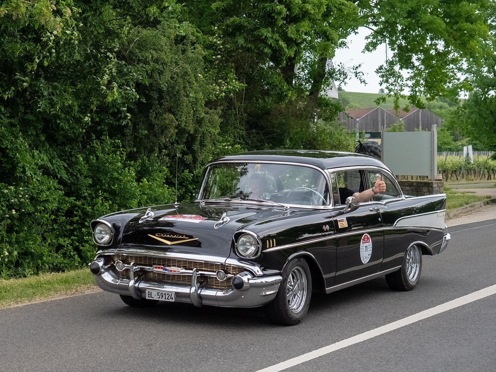
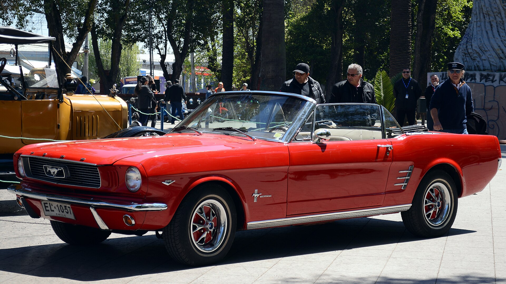
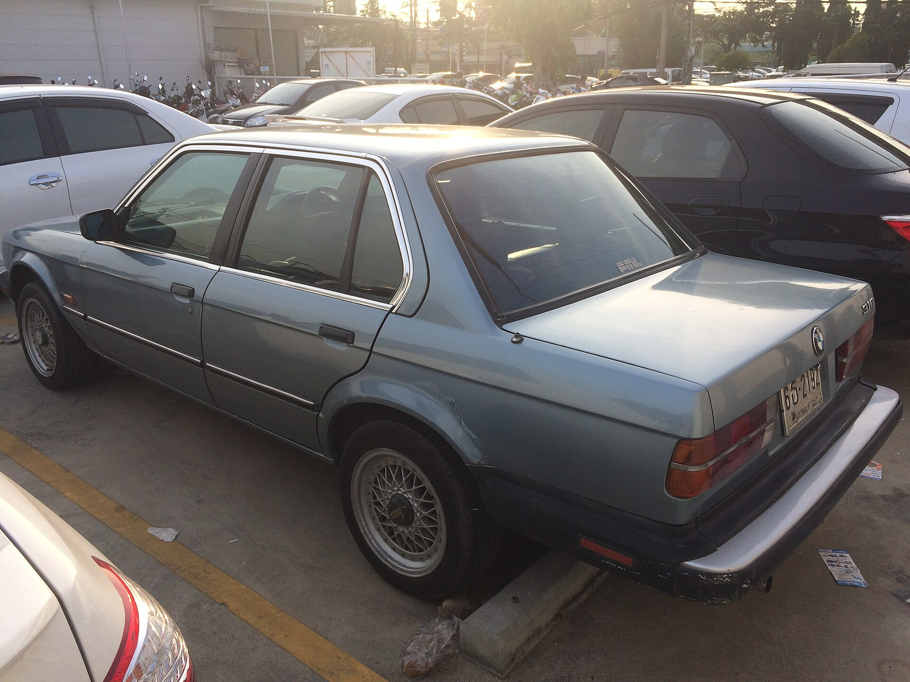
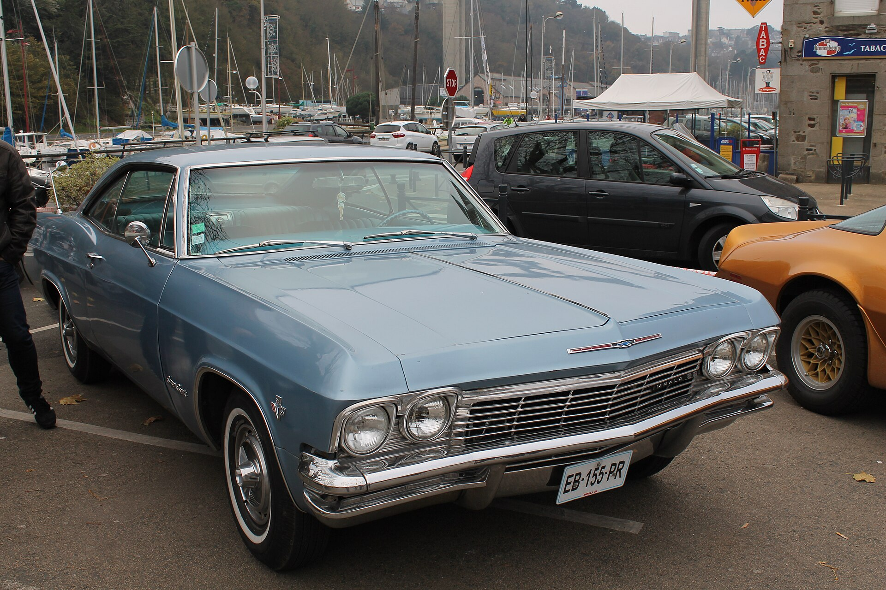
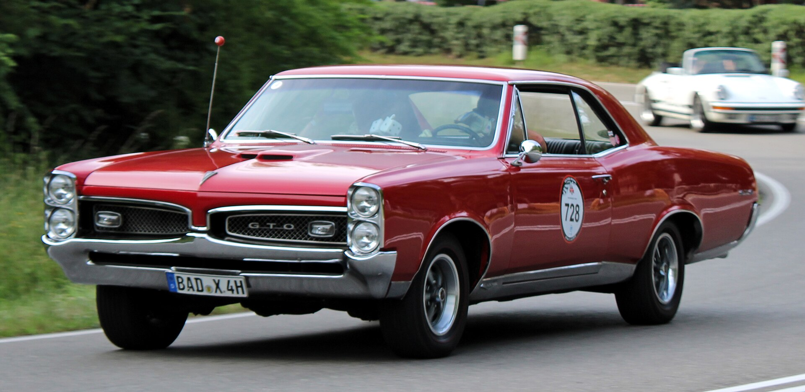
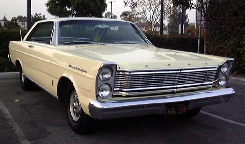
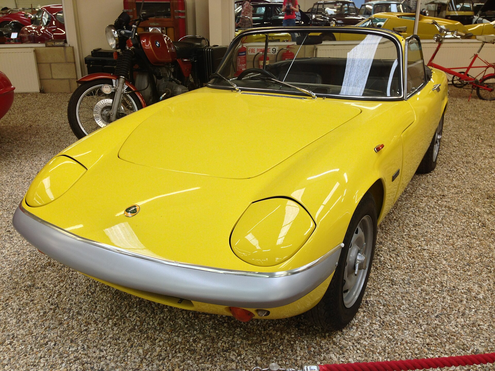
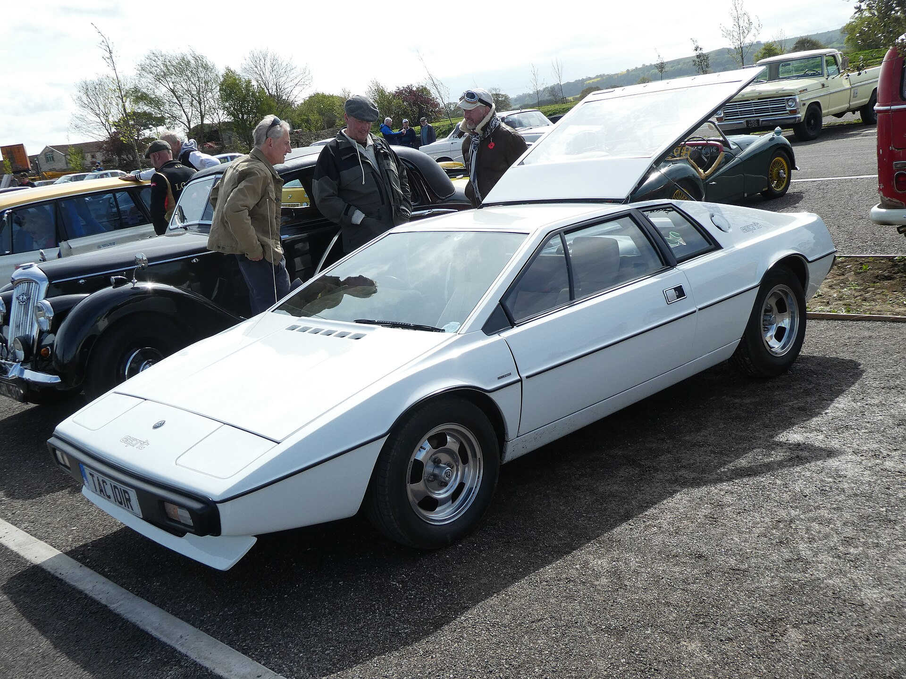
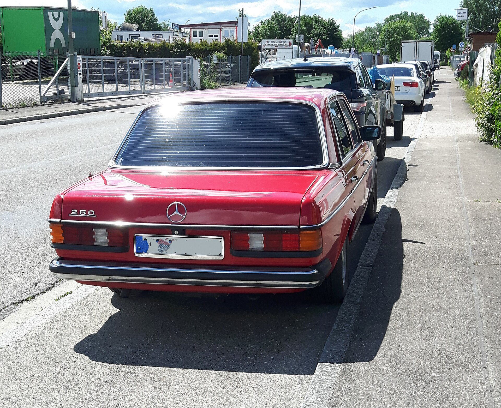

Mecânica Clássica
Motores a gasolina, carburados e injetados. Diagnóstico, retífica e regulagem fina.
Especialistas em carros das décadas de 1950 a 1980. Restauração completa, mecânica clássica e peças de época com a precisão que cada veículo merece.
Mercedes-Benz 300SL Roadster, 1957 — via Wikimedia Commons
Há mais de três décadas cuidamos de ícones das décadas de 50, 60, 70 e 80 com o mesmo cuidado de quem os tirou da linha de montagem.
Motores a gasolina, carburados e injetados. Diagnóstico, retífica e regulagem fina.
Remoção de ferrugem, reparo de lataria e pintura nas cores originais de fábrica.
Do chassi ao acabamento, com laudo técnico e documentação de todo o processo.
Rearme de chicotes, alternadores, dínamos e painéis preservando a aparência original.
Cada era tem sua personalidade. A gente entende todas elas.

ANOS 50Chevrolet Bel Air, Mercedes 300SL. Monobloco, embreagens originais e as peças raras que ninguém mais tem.
Orçamento
ANOS 60Ford Mustang, Pontiac GTO, Lotus Elan. V8, carburadores múltiplos e freios a tambor restaurados à especificação de fábrica.
Orçamento ANOS 70
ANOS 70
BMW 2002, Lotus Esprit. Injeção mecânica, ar-condicionado de época e restauração estética completa.
Orçamento
ANOS 80BMW E30, Mercedes W123. Eletrônica básica, turbo original e acabamentos característicos da década.
OrçamentoAlguns clássicos que passaram pelas nossas mãos.






Agende uma avaliação gratuita do seu clássico.